Python pour la data science TD 3


Pourquoi utiliser Git?
- Multiples versions d’un fichier au cours du temps
- Casse-tête sur le nommage des versions de fichiers:
[date]_[fichier].py? (ex:241001_main.py)[fichier]_[version].py? (ex:main_v0.3.py)
- Difficulté à connaitre les évolutions entre fichiers (ex: correction de bug, ajout de fonctionnalité etc.)
- Fichiers avec le même nom en local et dans le cloud (Google Drive, Sharepoint etc.) peuvent être différents
- Travailler en équipe sur le même fichier et gestion des conflits
==> Solution: Git.
- Logiciel spécialisé dans le contrôle de version (de loin le plus populaire)
- Utilisé par tous les développeurs, qu’ils travaillent seuls ou en équipe.
Notes:
Gitest indépendant du langage de programmation, et peut être utilisé pour d’autres finalités: documentation ou tout projet avec des évolutions de fichiers.Gitn’est pasGithubouGitlab(cf. slide suivant)
Git vs GitHub vs Gitlab
Gitest un logiciel:- Utilisation en ligne de commandes
- Interfaces graphiques sur la plupart des outils modernes de développement (
RStudio,VS Code,Pycharmetc.)
GitHub,GitLab,Bitbucketetc. sont des forges logicielles.- Espace d’archivage de code dans le cloud
- Fonctions supplémentaires de réseaux sociaux
Principe de fonctionnement
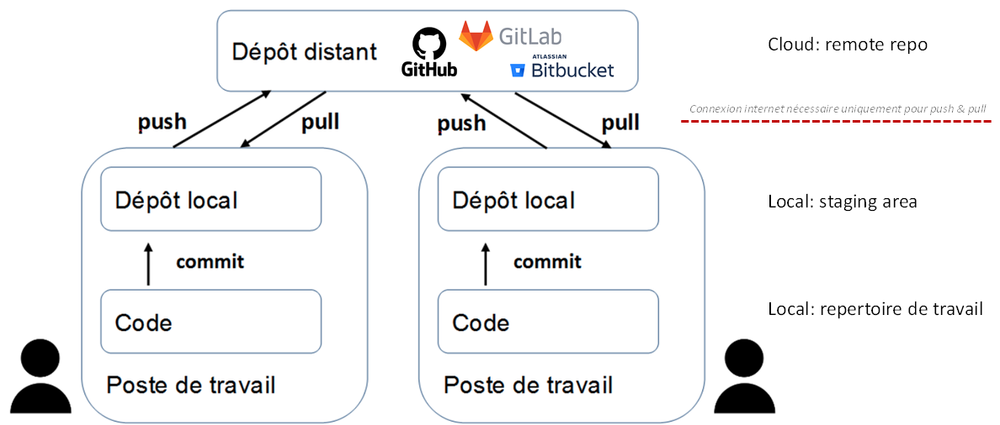Principe de fonctionnement
Évolution du fichier dans le temps:
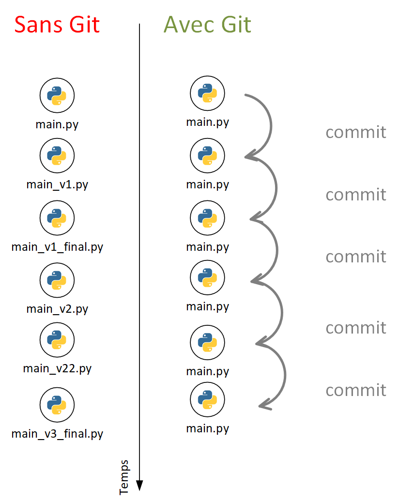
Suivi des modifications sur GitHub:
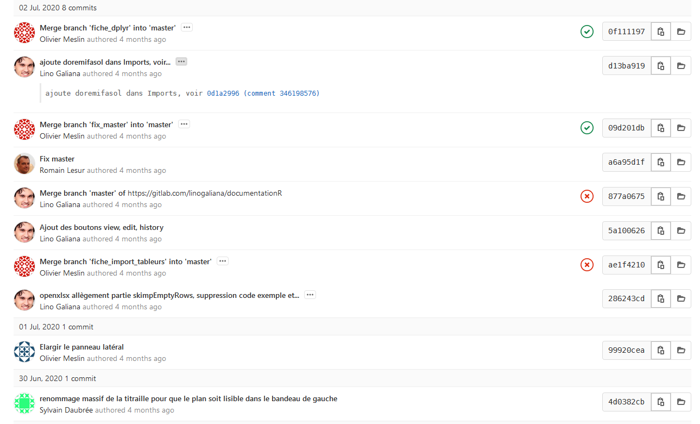
Le format Markdown
- Language de balisage simpifié permettant de générer du code
htmlà partir d’une syntaxe allégée.
- Syntaxe
Markdown:
- Language utilisé sur
GitHubpour la rédaction des fichiersREADME.mdet pour les échanges entre contributeurs. - Language utilisé dans Jupyter pour créer des cellules de commentaires et analyses (à utiliser pour le projet!)
- Permet de générer des pages web de façon rapide et maintenables.
- Utilisé pour la rédaction de ces slides et du cours Python pour la data science.
- Documentation.
Markdown Cheatsheet
| Type | Or … | Get |
|---|---|---|
*Italic* |
_Italic_ |
Italic |
**Bold** |
__Bold__ |
Bold |
# Heading 1 |
Heading 1========= |
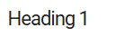 |
## Heading 2 |
Heading 2--------- |
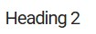 |
[Link](http://a.com) |
[Link][1][1]: http://b.org |
Link |
 |
![Image][1][1]: http://url/b.jpg |
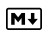 |
> Blockquote |
||
* List* List* List |
- List- List- List |
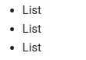 |
1. One2. Two3. Three |
1) One2) Two3) Three |
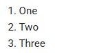 |
horizontal rule --- |
horizontal rule *** |
|
Inline `code` with backticks |
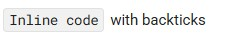 | |
| ``` # code block print ‘3 backticks or’ print ‘indent 4 spaces’ ``` |
····# code block ····print ‘3 backticks or’ ····print ‘indent 4 spaces’ |
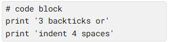 |
Source: https://commonmark.org/help/
Création de compte GitHub
Création de compte et dépôt
- Se rendre sur
github.comet créer un compte si pas déjà fait - Créer un dépôt privé.
- Ajouter un
README.md - Ajouter un
.gitignore(modèle:Python)
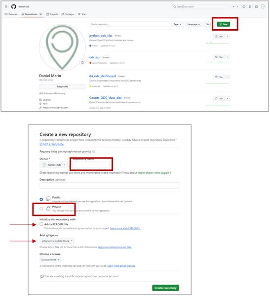
Authentification - GitHub
- Nécessaire pour contribuer à un dépôt
- Deux types d’authentifications:
- HTTPS: login et mot de passer ou token généré par GitHub
- SSH: clé cryptée en local sur le poste de travail
- Aller sur son profil en haut à gauche puis:
settings / menu gauche: developper settings / Personal access tokens, click Fine-grained tokens / Generate new token**.
- Donner un nom au token, période de validité et le copier.
Authentification - SSP Cloud
- Ne jamais copier le token dans un fichier texte non crypté! (utiliser Keepass par exemple).
- Aller sur “Mon compte” du
SSPCloud, onglet Git, section Git Forge Personal Access Token, edit et coller le token. - Aller sur Mes Services / ➕Nouveau service / vscode-python
Clone de repo Git
- Sur le Repo
Git, récupérer l’url du repo. - Sur le projet
SSPCloud: Ouvrir le terminal (☰ / Terminal / New Terminal) et taper
- Suivre les étapes
- Observer la mise à jour de l’explorateur de fichiers sur
VSCode, votreREADMEet votre.gitignorevisibles surGithubdoivent maintenant être là. - Tester l’ajout et la modification de fichiers et répertoires.
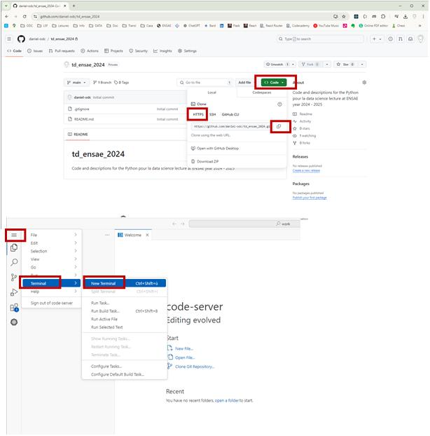
Les commandes essentielles
| Commande | Description |
|---|---|
git remote -v |
Obtention de l’url du repo distant |
git add my_file.py |
Ajout du fichier my_file.py à la staging area |
git commit –m "commentaire" |
Commit des changements avec commentaire de description des modifications |
git pull origin master |
Récupération de la dernière version du code depuis le repo remote (opération « fetch »), et fusion avec changements locaux si nécessaire (opération « merge ») |
git push origin master |
Envoi des dernières modifications locales sur le repo remote |
Le fichier .gitignore
- Permet de lister des répertoires, fichiers, ou types de fichiers à ne pas inclure dans les historiques de versions.
- Exemple:
- Jeux de données
- Fichiers de configuration avec mots de passe
- Fichiers temporaires
- Librairies externes
- Etc.
- Syntaxe:
#: commentairesmy_file.txt: le fichier my_file.txt ne sera pas pris en compte*.txt: aucun fichier texte pris en compte__pycache__: aucun fichier dans le répertoire__pycache__ne seront pris en compte.
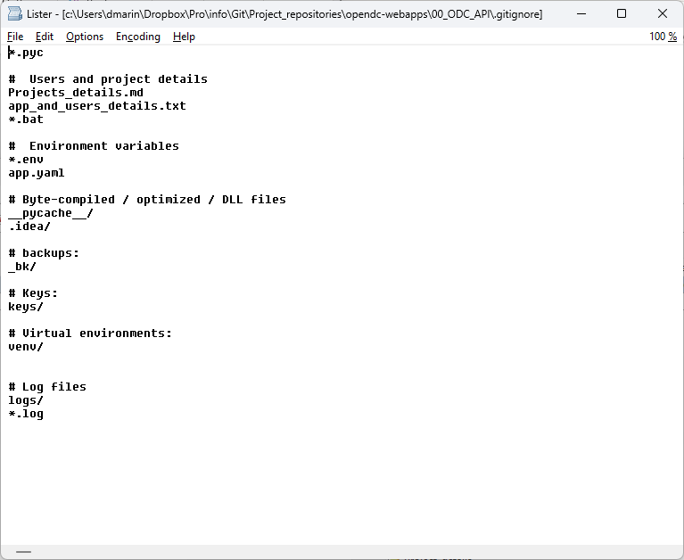
Exemple de fichier .gitignore
Structurer un projet Python
- Structure minimale:
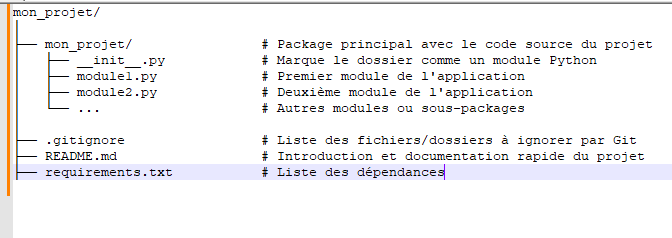
- Structure complète:
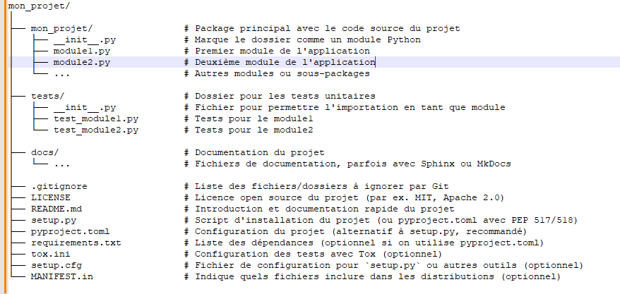
source: ChatGPT
Exercices
Enrichir le fichier
.gitignoreen ajoutant les fichiers de type.csvet.pycau fichierModifier un fichier depuis
VSCodeet envoyer sur le repo remoteModifier le fichier
README.mddirectement dansGitHubet rapatrier les modifications dansVSCodeCréer une structure de projet minimale sur
VSCodeet envoyer sur le repo remote
Les branches
Une branche est une version parallèle du projet qui coexiste avec la version principale, sur main. Cela veut dire qu’avec Git, on peut avoir un même fichier qui coexiste sous plusieurs versions différentes ce qui constitue un terreau fertile pour l’expérimentation. Une version sera active (la branche active) mais les autres seront disponibles, activables si besoin
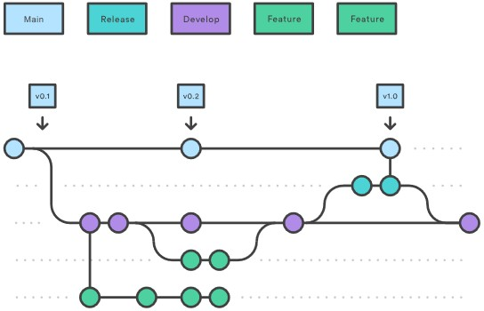
Exercices
Cf. cours
Notes:
- Créer la banche sur VSCode:
Volet source control, en haut à gauche: « … » / Branch / Create Branch
- Rendre le repo public sur GitHub:
Settings / Danger zone / Change visibility
- Merge branch:
« squash and merge »: permet de fusionner tous les commit de la branch à merger en un seul- Si conflit, résoudre le conflit en local sur la branche, pas sur le main!
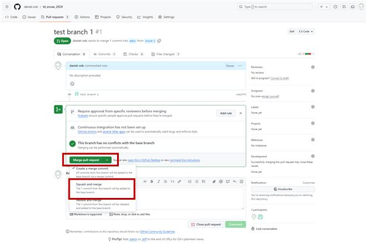
Gestion des conflits
- Cas simple: ajout par une personne tierce en remote, sans évolutions en local entretemps
fast-forward merge
- Cas plus complexe: modifications simultanées. 2 stratégies:
merge: vérification manuelle des changements ligne par ligne
rebase: 3 étapes:
1. Supprime temporairement le commit local
2. Réalise un fast forward merge maintenant que le commit local n’est plus là
3. Rajoute le commit local au bout de l’historique- Exercices: cf. cours

Cas simple
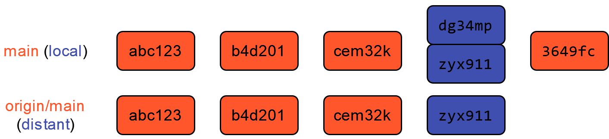
Cas merge
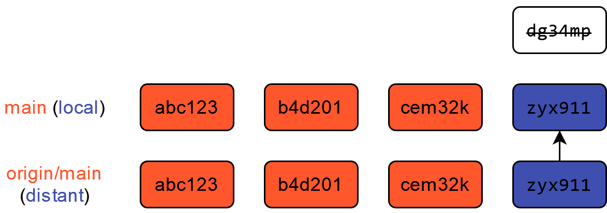 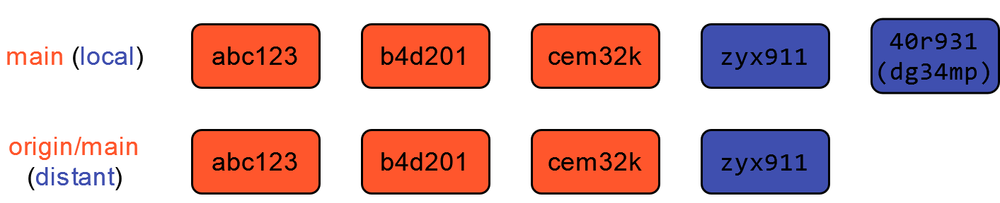
Cas rebase
Les commandes de branches
| Commande | Description |
|---|---|
git branch |
Indique sur quelle branche on travaille |
git branch branch_name |
Crée la nouvelle branche branch_name |
git checkout branch_name |
Active la branche branch_name |
git merge branch_name |
Fusionne les changements de la branche branch_name avec la branche active |
git branch –d branch_name |
Efface la branche |
Les commandes de projet collaboratif
| Commande | Description |
|---|---|
git clone repo_distant repo_local |
Clone le projet distant repo_distant dans le répertoire local repo_local |
git fetch |
Récupère les derniers changements du repo remote |
git pull origin main |
Met à jour les modifs dans le repo local |
git push origin banch_name |
Push les modifs de branch_name sur le repo distant |
TD ENSAE Python pour la data science – pythonds.linogaliana.fr